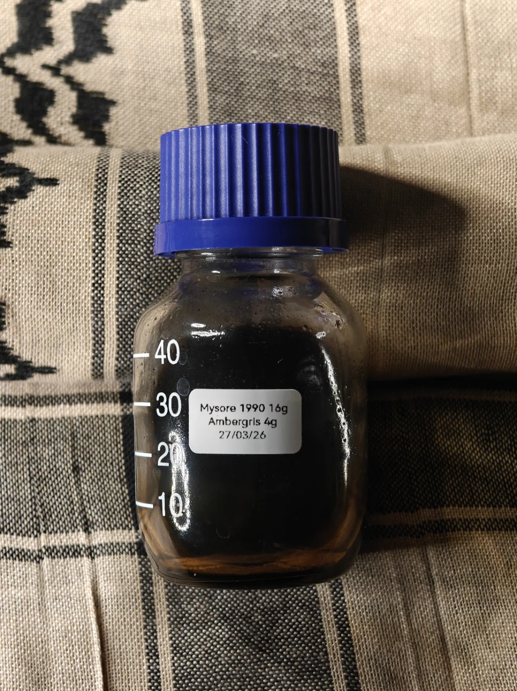

1990 Mysore x Ambergris
Pre-dating me by almost a decade, the trees themselves doing so with ease, a rare and almost unobtainable Mysore sandalwood from 1990 contains the chemical interweaving of high grade ambergris.
Being completely honest, I don't know, these materials won't ever exist ever again - the insanity of this statement is beyond weight and conjecture - what does one say about impossible to procure materials?
Aged Mysore sandalwood and ambergris naturally aged by the sun and sea; it's a simple process that requires the minimalist of heat to retain it's sensitive composure -
macerating in a cold area away from all light and being seldom agitated to allow a natural cohesion, residue floods the medium and speckles of raw ambergris still exude aroma paralle to the sandalwood.
This is the culmination of age, the smell of time and nature in harmony, the nexus of literal land, sea, and sky -
a semi-liquid state with unsaturated material gathering at rest, the surface of this maceration coats the vessel surface; the surface tension barely breaks and when it does it fall over itself beautifully.